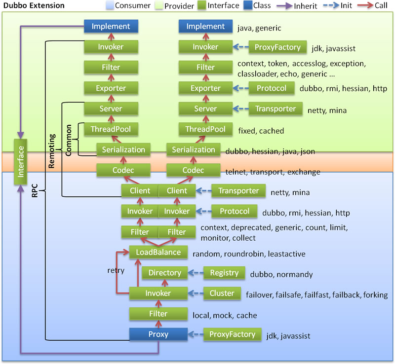

Framework Design
Overall design

Image description:
- Left area with light blue background shows service consumer interfaces, Right area with light green background shows service provider interfaces, center area shows both side interfaces.
- The image is divided into 10 layers from the bottom to the top, and the layers are one-way dependence. The black arrow on the right represents the dependency between layers, and each layer can be stripped from the upper layer to be reused, the Service and Config layers are API, and the other layers are SPI.
- Green boxes are extension interfaces, blue boxes are implementation classes, image only shows implementation class of associated layers.
- The blue dashed line is the initialization process, which is assembly chain when starting, red line for the method call process, which is calling chain when running, purple triangle arrow is inherited, can treat subclass as the same node of parent class, text of lines are the method invocation.
Layer description
- config layer: external config interface,
ServiceConfigandReferenceConfigis the center of the layer, you can directly initialize config class, also can generate config class by spring. - proxy layer: transparent proxy of service interface, generate client Stub of service and server Skeletion of service,
ServiceProxyis the center, extension interface isProxyFactory. - registry layer: encapsulation of service registry and discovery, service URL is the center, extension interfaces are
RegistryFactory,RegistryandRegistryService. - cluster layer: encapsulation of cluster of muliple providers and load balance, and bridging registration center,
Invokeris the center, extension interfaces areCluster,Directory,Router,LoadBalance. - monitor layer: monitor of RPC call times and call execute time,
Statisticsis the center, extension interface areMonitorFactory,Monitor,MonitorService - protocol layer: encapsulation of RPC,
InvocationandResultare the center, extension interfaces areProtocol,Invoker,Exporter - exchange layer: encapsulation of request and response, synchronous transfer asynchronous,
RequestandResponseare the center, extension interfaces areExchanger,ExchangeChannel,ExchangeClient,ExchangeServer - transport layer: abstraction of mina and netty,
Messageis the center, extension interfaces areChannel,Transporter,Client,Server,Codec - serialize layer: reusable tools, extension interfaces are
Serialization,ObjectInput,ObjectOutput,ThreadPool
Relationship description
- In RPC, Protocol is the core layer, it means that you can complete RPC calling by Protocol + Invoker + Exporter, then filter at the main process of Invoker.
- Consumer and Provider are abstraction concepts, just want you have a more intuitive understanding of which classes belong to the client and server side, the reason not use Client and Server is that Dubbo uses Provider, Consumer, Registry, Monitor divide logical topology node in many scenes, keep the concept of unity.
- Cluster is external concept, the purpose of Cluster is that make various Invoker disguise to one Invoker, so that we just pay attention to the Invoker in Protocol layer, adding Cluster or removing Cluster will not affect other layers, because we don't need Cluster when only have one provider.
- The Proxy layer encapsulates the transparent proxy for all interfaces, and in other layers with Invoker as the center, turn Invoker into interface, or turn interface implementation into Invoker by Proxy only when exposuring to user. RPC still work even removing Proxy layer, but not so transparent, making remote service calling don't look like local service calling.
- Remoting is the implemetation of Dubbo protocols, you can remove Remoting if choosing RMI. The Remoting is divided into Transport layer and Exchange layer, Transport layer is responsible for one-way message transmission, it's abstraction of Mina, Netty, Grizzly, it also can extend UDP transmission. The Exchange layer encapsulates the Request-Response semantics over the transport layer.
- Actually Registry and Monitor are not at the same layer, they are independent nodes, draw them together by layer just for global view.
Modules packaging

Modules description:
- dubbo-common module: includes Util classes and common modules.
- dubbo-remoting module: is Dubbo protocol implementation, no need to use this module if using RMI for RPC.
- dubbo-rpc module: abstraction of various protocols, and dynamic proxy, only one to one call, not concerned with the management of cluster.
- dubbo-cluster module: disguise many service providers as one provider, including load balancing, fault tolerance, routing, etc. the address list of clusters can be either static or send by registry.
- dubbo-registry module: Based on the cluster of registry send address and the abstraction of various registry centers.
- dubbo-monitor module: statistics of service call times, call time, call chain tracked services.
- dubbo-config module: is Dubbo external API, users use Dubbo by Config, hide Dubbo details.
- dubbo-container module: is a Standlone container, just use Main method to load Spring, because usually service no need Tomcat/JBoss features.
Package dividing according to the layer structure, and the difference with layer dividing:
- container is service container, for service running deployment, not showed in the image.
- protocol layer and proxy layer are placed in RPC module, they are the core of RPC module, you can use these 2 layers complete RPC call when only have 1 provider.
- transport layer and exchange layer are placed in remoting module, for RPC call base comminucation.
- serialize layer is placed in common module, for reuse.
Dependence relationship

Image description:
- The boxes in image, Protocol, Cluster, Proxy, Service, Container, Registry, Monitor represent layer or module, the blues mean interactive with business, the greens mean only internal interactive with Dubbo.
- The backgroud boxes in image, Consumer, Provider, Registry, Monitor represent deployment logical topology node.
- The blue dashed line in the image is called for initialization, the red dashed line is called asynchronously for runtime, and the red line is called synchronously for runtime.
- The image only includes RPC layer, don't includes Remoting layer, the whole Remoting hides in Protocol layer.
Call chain
Expand the red call chain of the overall design map:

Expose service sequence
Expand the initialization chain of service provider exposes service which at the left of the overall design map, the sequence diagram shows below:

Reference service sequence
Expand the initialization chain of service consumer references service which at the right of the overall design map, the sequence diagram shows below:

Domain model
The core domain models of Dubbo:
- Protocol is service domain, it is the main function entrance of Invoker exposure and reference, it is responsible for the life cycle management of Invoker.
- Invoker is entity domain, it is the core model of Dubbo, all the other models are disturbed, or converted to it, it represents an executable, you can call it by calling invoke, it can be a local implementation, a remote implementation, or a cluster implementation.
- Invocation is session domain, it holds variables in the calling process, such as the method name, the parameters, and so on.
Base design principle
- Use Microkernel + Plugin design pattern，Microkernel only responsible for assembly Plugin, the functions of Dubbo are implemented by extension points, it means that all functions of Dubbo can be replaced by self defined extension by user.
- Use URL to be the startdard format of config information, all extension points transfer config information by URL.
More design principles refer to: Framework design principle